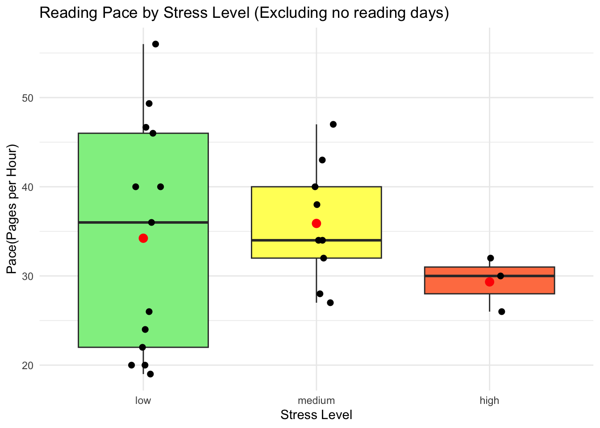

library(tidyverse)
library(janitor)
library(here)
library(gt)
library(dplyr)
library(ggplot2)
library(tinytex)homework_03
GitHub Repository: https://github.com/sanjanasujeet/ENVS-193DS_workshop-07
1. Personal Data
1A. Data Summarizing
The main thing that I want to look at from my data is how stress levels affect the pace of my reading.
I will analyze my reading pace by dividing ‘pages read’ by ‘hours reading’ and compare this to ‘quantified daily stress level’, which I calculated based on the number of upcoming assignments and tests as well as my perceived stress, to see if stress influences the pace that I read.
To summarize my data, I will calculate the median and range of my reading pace across different stress levels (low, medium, high stress) to see if stress impacts not just how fast I read within these stress levels, but also how much variation there is. Comparing medians and range through boxplots within stress levels is informative because it is a simple way to visualize if there is a difference between how different stress levels affect me and how consistently they affect me. I may read less efficiently when I feel overwhelmed, or I may read quicker when trying to avoid stress through a calming activity. I may consistently read faster in high stress levels or it could fluctuate more in higher stress levels. Median and Range could answer these questions.
cleaning data
data<- read.csv("data/springtracking2.csv") #read in data
data_clean<-clean_names(data) #cleaning column names
data_clean <- data_clean |>
rename(hours = hours_of_activity) #shortens name cuz i think i will be using it often
data_clean <- data_clean |>
mutate(pace = pages_read / hours) #creates new column pace which is pages/min
data_clean <- data_clean %>%
mutate(pace = replace(pace, is.nan(pace), 0))# removes NaN and makes them 0 instead(this was a calculation issue)
data_clean <- data_clean %>%
mutate(stress_level = case_when(
quantified_stress >= 0 & quantified_stress <= 9 ~ "low",
quantified_stress >= 10 & quantified_stress <= 19 ~ "medium",
quantified_stress >= 20 ~ "high")) # creates new column called stress_level and takes quantified stress levels and makes 3 levels out of it
data_clean <- data_clean %>%
mutate(stress_level = factor(stress_level, levels = c("low", "medium", "high"))) # orders the levels1B. Visualization
ggplot(data_clean |> filter(pace != 0),#removes anywhere pace is 0(meaning i didnt read that day)
aes(x = stress_level, y = pace, fill = stress_level)) +#sets x and y and colors based on stress level
geom_boxplot() +#makes boxplot
scale_fill_manual(values = c("low" = "turquoise", "medium" = "#FFFF66", "high" = "coral")) +#manually inputs colors
labs(
title = "Reading Pace by Stress Level (Excluding no reading days)", #title
x = "Stress Level", #xaxis
y = "Pace(Pages per Hour)" #yaxis
) +
theme_minimal() + #clean background
theme(legend.position = "none") #remove legend
1C. Caption
Figure: Reading Pace by Stress Level (Excluding Days with No Reading)
This boxplot shows the distribution of reading pace, measured in pages per hour, across three calculated stress levels: low, medium, and high. The stress levels are distinguished on the x axis and by color with turquoise on the low stress level box plot, yellow on the medium stress level, and coral on the high stress level. The bold black line inside the box represents the group’s median and just by looking at medians, there is a correlation between higher pace and lower stress levels. However, then looking at the rest of the box, with the top and bottom representing the 1st and 3rd quartiles and the whiskers representing minimum and maximum, there is too much overlap between groups to draw significant conclusions just from the graph. The range, or height of the box, shows us that during days of low stress levels there is high variability but days of high stress have a more compressed range and consistently read fewer pages per hour than medium stress level days.
1D. Table Presentation
# Summarize stats of reading pace by stress level
summary_table <- data_clean %>%
filter(pace != 0) %>%
group_by(stress_level) %>%
summarise(
Min = round(min(pages_read), 1),
Q1 = round(quantile(pace, 0.25), 1),
Median = round(median(pace), 1),
Q3 = round(quantile(pace, 0.75), 1),
Max = round(max(pages_read), 1) ) %>%
arrange(factor(stress_level, levels = c("low", "medium", "high")))
#create gt table
summary_table %>%
gt() %>%
tab_header(title = "Distribution of Reading Pace by Stress Level") %>%
cols_label(
stress_level = "Stress Level",
Min= "Minimum",
Q1 = "1st Quartile",
Median = "Median",
Q3 = "3rd Quartile",
Max= "Maximum")| Distribution of Reading Pace by Stress Level | |||||
|---|---|---|---|---|---|
| Stress Level | Minimum | 1st Quartile | Median | 3rd Quartile | Maximum |
| low | 10 | 22 | 36 | 46 | 70 |
| medium | 14 | 32 | 34 | 40 | 47 |
| high | 6 | 28 | 30 | 31 | 32 |
2. Affective Visualization
2A. Describe in words what an affective visualization could look like for your personal data
I could create a calendar with books instead of regular squares and they are colored in by stress level with a number of the pace on each book. I can add in notes in little bubbles connected to the books like bookmarks for the days I wrote observations like ‘re-read the same page 3 times’ or ‘sped through this.’
2B. Sketch
2C. Visualization Draft
2D. Artist Statement
This piece visualizes my personal reading pace across days of with stress levels. Each book icon represents a day I read, color-coded by stress level(green-low, blue- medium, coral- high) and labeled with how many pages I read per hour.
I was inspired by my life’s saviour: google calender, and bullet journal youtube creators like Erin Smith and KB Journals. I track everything in my life down to the minute with my google calendar and I love how easy it is to just look at the page and know a lot of information through color coding, time blocks, and writing. But before I used gcal, I used bullet journals and the idea of using books as calendar units came from an old bullet journal spread I had in middle school, where I tracked which books I read which days(back when I read multiple books in a week.)
The final piece is a digital hand-drawn calendar with color codes and written info made through Procreate.
I started with a template of books in a grid like a calendar and use the google sheet I made to add colors and pace to each book. Then using the Notes column I input short sentences about my qualitative observations and tried to make them look like bookmarks.